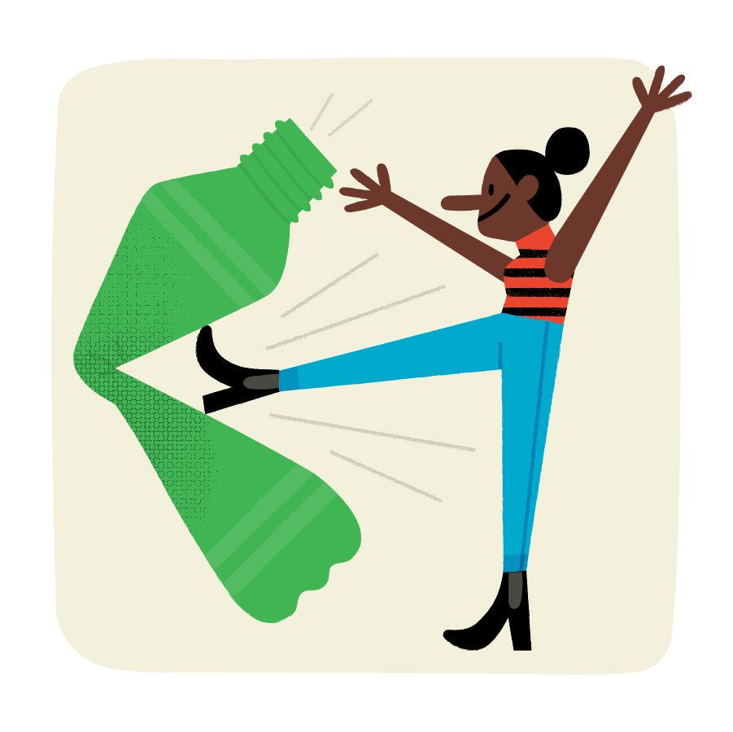
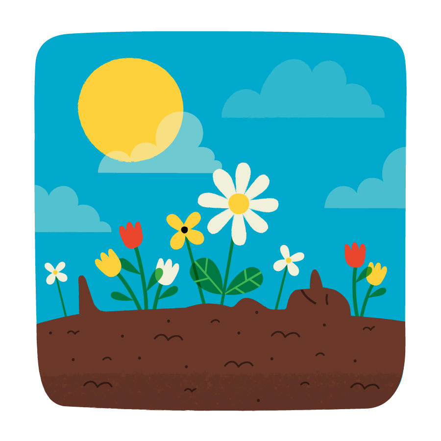

19 — Editorial
Eco Living
- Client
- Philadelphia Magazine
- Year
- 2019
- Discipline
- Editorial
Environmental ways to approach the everyday parts of life.

About the project
Editorial illustrations for Philadelphia Magazine on sustainable living: the practical, everyday approaches to reducing environmental impact. Characters drawn from domestic and urban life, placed in scenes that make eco choices feel normal and achievable rather than aspirational or preachy. Published in print.
